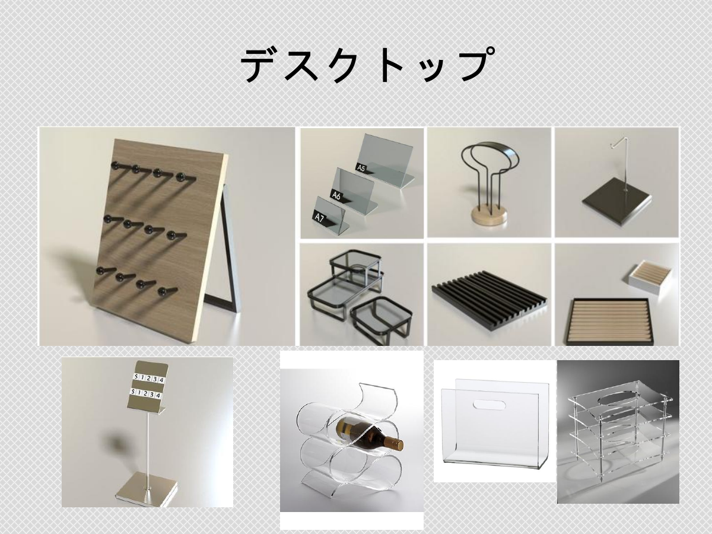

Counter direction
The Big Fame display products catalog visibly includes a counter category covering counter fixtures and customer touchpoint displays.

B2B POINT-OF-SALE DISPLAY
Plan POS displays around counters, desktops and customer touchpoints. Start with the merchandise, footprint, checkout flow and fixing method, then confirm the model and drawing.
Ask about POS display equipmentProduct names: POS Displays／POS 展示架／POS ディスプレイ
The Big Fame display products catalog visibly includes a counter category covering counter fixtures and customer touchpoint displays.
The catalog visibly includes a desktop category covering tabletop signage, small-product presentation and desktop display directions.

Store type, product size, footprint, material, finish, load, MOQ, lead time and customization are confirmed by model, drawing, sample and project.
Catalog images prove category and form. Do not infer final dimensions or material grades from an image alone.
Product size, quantity, replenishment method and whether signage or security is required.
Available width, depth, height, customer flow, fixing restrictions and site photos.
Material, finish, load, packaging, MOQ, lead time and customization scope.
Related: Modular Fixtures · Price Tag Holders · Modular 3C Store Case · PAGE tabletop cosmetic organizer record
Start with merchandise, footprint, flow, fixing method and quantity. Drawings, material, finish, MOQ and lead time are confirmed by project.
The catalog proves category and form. Final dimensions and material specifications require a model drawing or quotation.
These fields form the shared confirmation frame before a formal quotation. A field becomes a formal specification only when it is supported by the matching SKU, drawing, quotation or sample.
Confirm the store type, backing or mounting system, displayed product and site conditions.
Confirm material grade, colour, finish and appearance against the SKU, drawing, quotation and sample.
Confirm dimensions, wire diameter, board thickness, load or fixing method against the representative drawing and project conditions.
There is no universal MOQ or lead time for every product; confirm by type, quantity, material, finish and project.
Share dimensions, photos, drawings, quantity and use conditions so changes to size, material, finish or structure can be assessed.
Representative images, drawings and cases support initial evaluation; formal PDF, CAD, samples and commercial terms follow the approved version.
Need dimension drawings, CAD, material or specification data? Review technical resources before starting an inquiry. technical-resources
Choose a route: Procurement · Design support · Technical resources